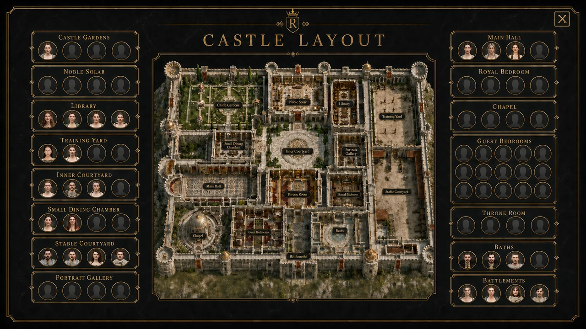
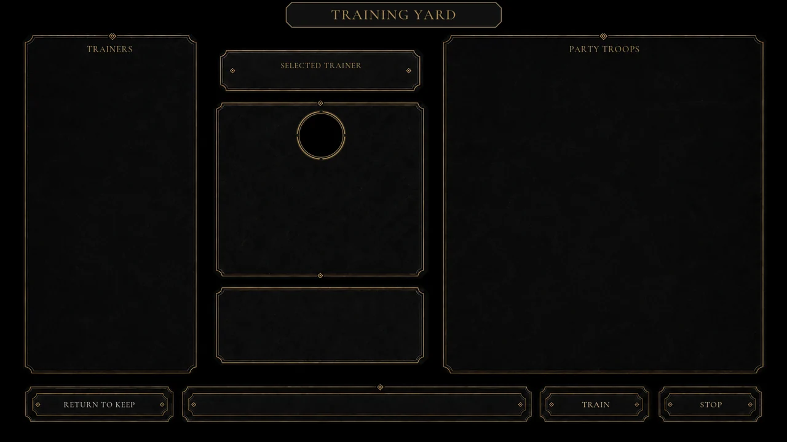

Mount & Blade II: Bannerlord · Reign
Keeps, households, and training
Find people in your keep, train troops, and manage household privacy.
Development guide · November 24, 2026 · Edition notes
Castle Layout and room conversations
#Choose Explore the keep → Castle Layout to see the household's rooms and available people. Room placement reflects time of day, roles, and current availability. A courtier may be in the library in one part of the day and dining later.
Escape returns from Castle Layout to its origin. Room choices themselves use the displayed controls.
Rooms include the gardens, noble solar, library, training yard, inner and stable courtyards, small dining chamber, portrait gallery, main hall, chapel, throne room, baths, guest bedrooms, royal bedroom, and battlements. Selecting a room opens its supported conversation context. The people shown are the people available for that session; a bedroom assignment does not itself establish an affair.
Castles have the keep exploration and household routes as well as towns. Court authority, ordinary household access, and government access are separate permissions. You need not own a kingdom just to understand what a public room or household interface is showing.

Training Yard
#Use Visit the training yard from the supported keep menu. Select an eligible adult traveling with your party as trainer, review the troops and displayed training rate, then choose Train. The trainer's Leadership and weapon expertise affect the work.
Training advances campaign time. It awards experience to eligible regular party troops; it does not directly upgrade them or provide free upgrade equipment. Troops already ready to upgrade cannot keep banking unlimited training through this screen.
Use Stop when finished. The status can say that all eligible troops are ready while time continues until you stop it. Training belongs to the currently open visit; it is not an invisible permanent training order left behind after departure.
Escape closes the training visit. Use the visible Train and Stop controls to manage training deliberately.

Household pictures and privacy
#Castle Chat Image Generation controls room scenes independently of general portrait replacement. A room picture illustrates the chosen people and setting; it is not a substitute for their actual presence or a completed action.
Family Chambers, Homes, and room chat have different audiences. Before discussing a private matter, check which session you entered and who is selected. Someone else's nearby room is not automatically part of your conversation.